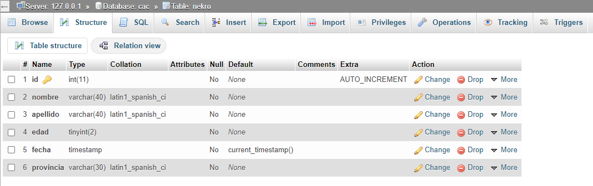
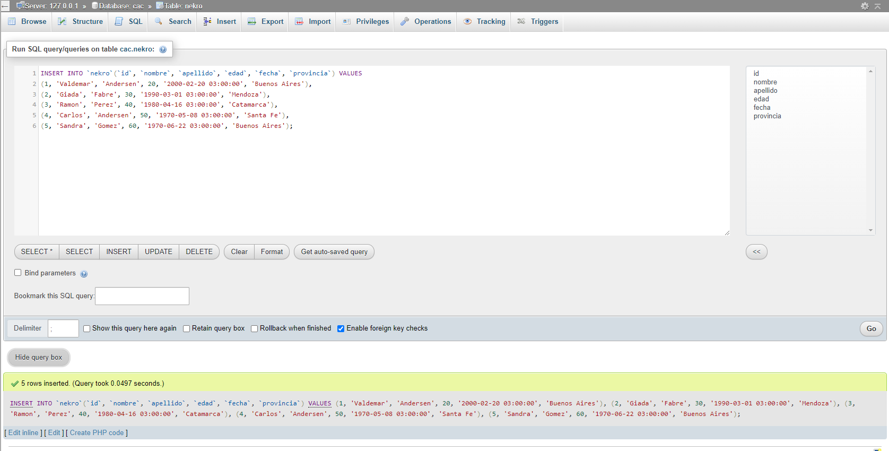

Ejercicio CAC DB1
Bajar Dump

Creacion de Tabla
CREATE TABLE `cac`.`nekro` (
`id` INT(11) NOT NULL AUTO_INCREMENT ,
`nombre` VARCHAR(40) CHARACTER SET latin1 COLLATE latin1_spanish_ci NOT NULL ,
`apellido` VARCHAR(40) CHARACTER SET latin1 COLLATE latin1_spanish_ci NOT NULL ,
`edad` TINYINT(2) NOT NULL ,
`fecha` TIMESTAMP NOT NULL DEFAULT CURRENT_TIMESTAMP ,
`provincia` VARCHAR(30) CHARACTER SET latin1 COLLATE latin1_spanish_ci NOT NULL ,
PRIMARY KEY (`id`)) ENGINE = InnoDB;

Insercion de datos
INSERT INTO `nekro`
(`id`, `nombre`, `apellido`, `edad`, `fecha`, `provincia`)
VALUES
(1, 'Valdemar', 'Andersen', 20, '2000-02-20 06:00:00', 'Buenos Aires'),
(2, 'Giada', 'Fabre', 30, '1990-03-01 06:00:00', 'Mendoza'),
(3, 'Ramon', 'Perez', 40, '1980-04-16 06:00:00', 'Catamarca'),
(4, 'Carlos', 'Andersen', 50, '1970-05-08 06:00:00', 'Santa Fe'),
(5, 'Sandra', 'Gomez', 60, '1970-06-22 06:00:00', 'Buenos Aires');
